Project 10: Ultrasonic Sensor
Objective: To program the microcontroller to read value from an ultrasonic sensor to detect distances.
Before we begin, switch to Upload Mode
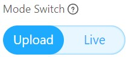
Installing the Upload Mode Broadcast extension.
-
Construct the circuit below. You may use a breadboard if you like.
- VCC ➡️ 5V
- Trig ➡️ Digital Pin 12
- Echo ➡️ Digital Pin 11
- Gnd ➡️ Gnd
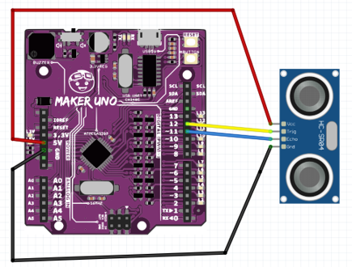
Ultrasonic sensors emit high-frequency sound waves and measure the time it takes for the sound to bounce back from an object. This allows us to calculate the distance between the sensor and the object. In this project, we'll use this concept to create a musical distance detector!
-
Then, we must install the extension Upload Mode Broadcast in mBlock 5 in the Devices tab.
Make sure the devices tab is selected.
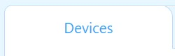
Then, at the bottom of the screen, click the extension 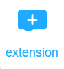 button.
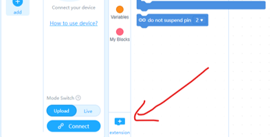
-
Search for Upload Mode Broadcast. Then look for the extension and click + Add.
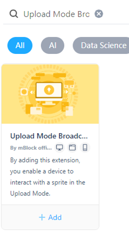
Once you added the extensions, you will see a new section from your coding toolbox.
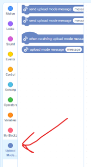
-
Next, we will also install the Upload Mode Broadcast for the Sprites tab.
Click the Sprite tab. 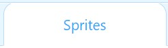
-
Click the Extensions button .
Then add the Upload Mode Broadcast.
Remember
The Devices and Sprites tab each have their own coding workspace.
The code in Devices tab will only work in the Devices section. The code in Sprites tab will only work in Sprites section.
Now we are going to code the microcontroller to:
-
Receive distance data from the ultrasonic sensor into the microcontroller (Devices tab), and
-
Broadcast (send) it to the Panda (Sprite tab) to display the distance.
Getting the data from the Ultrasonic Sensor.
-
Switch to the Devices tab and enter the code below.
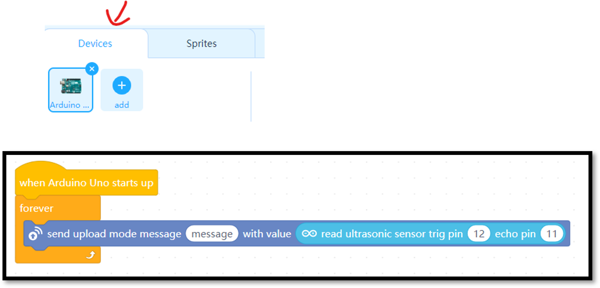
-
Click the button to upload the code to the microcontroller.
-
Next, switch to the Sprites tab and enter the code below.
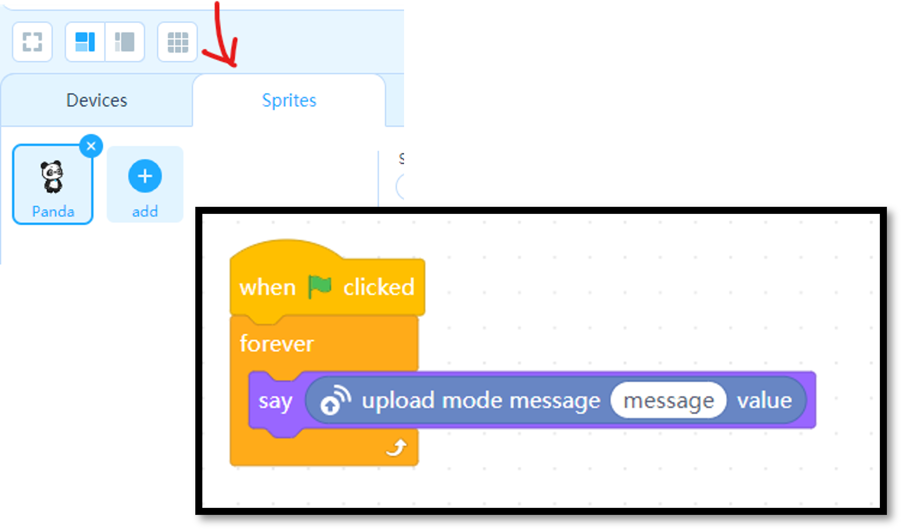
-
Then, press . You should be able to see the distance displayed on the Panda.
Explanation
In mBlock, the sprite and device sections each have their own coding tools.
The device section connects to the microcontroller and reads the distance data from the ultrasonic sensor.
This distance information is then sent directly to the sprite section.
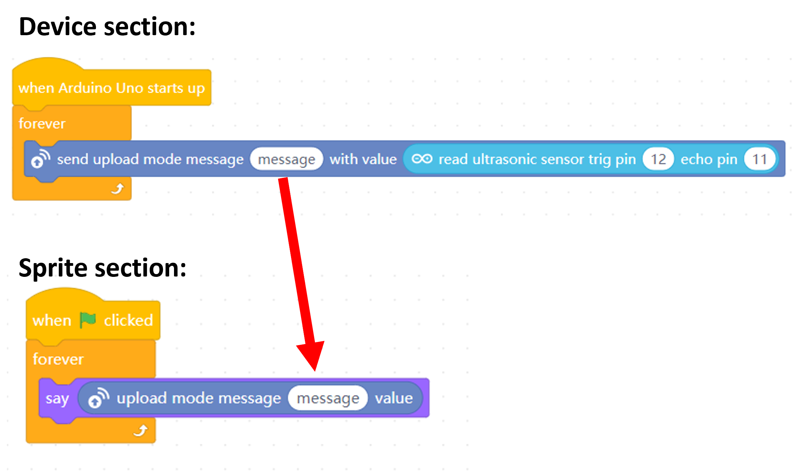
The panda (which is a sprite) receives the distance message and displays it on the screen using the "say" block.
Performing a conditional statement
-
Now let's create a variable name distance.
Select .
Then click 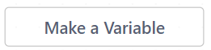.
Set the new variable name to distance and click OK.
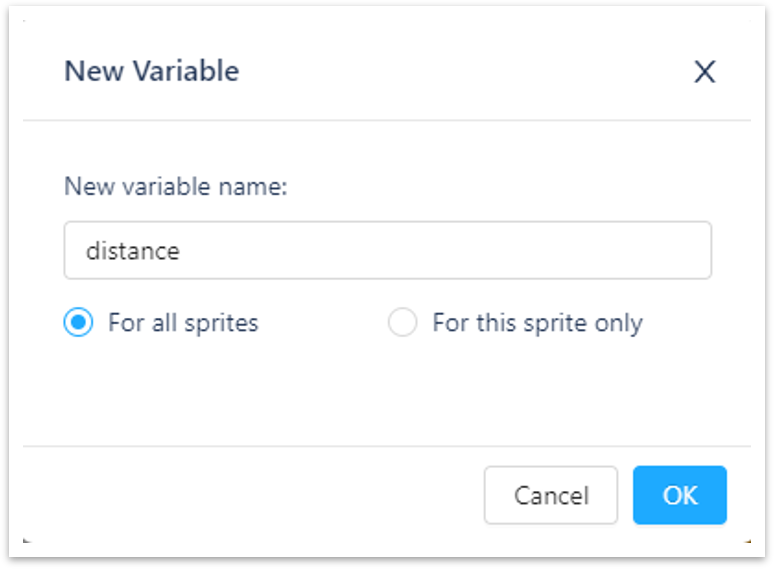
-
Now we will assign a value to the variable.
Switch to Sprites tab.
Delete the previous code and replace it with this code.
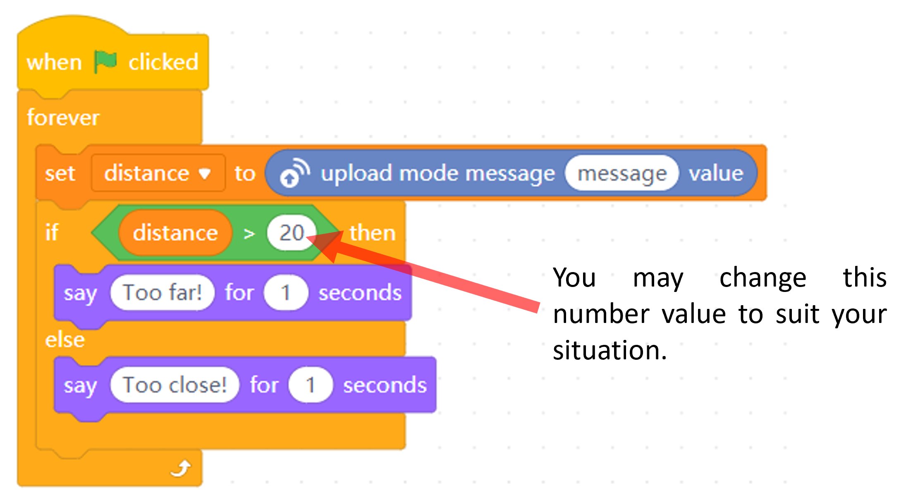
-
Press the .
Then use the palm of your hand and place it close to the ultrasonic sensor and far away.
The panda should say "too far" when your hand is far away from the sensor and "too close" when your hand is close to the sensor.